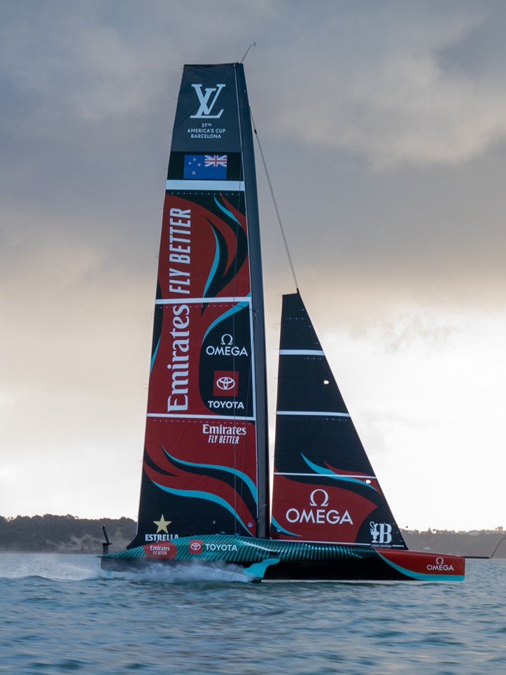
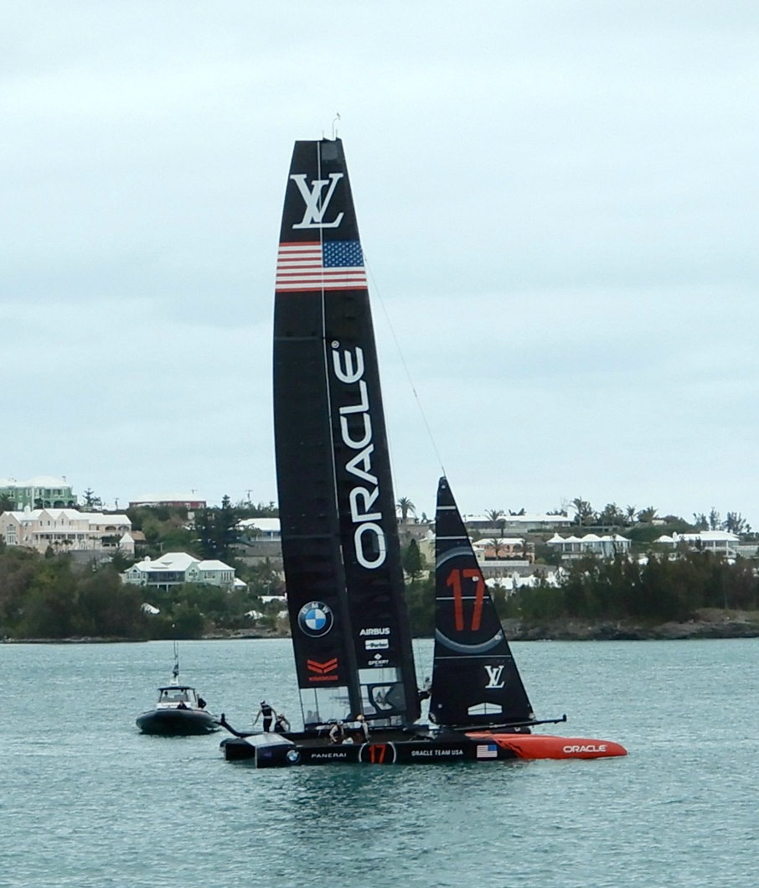
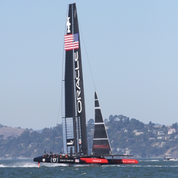
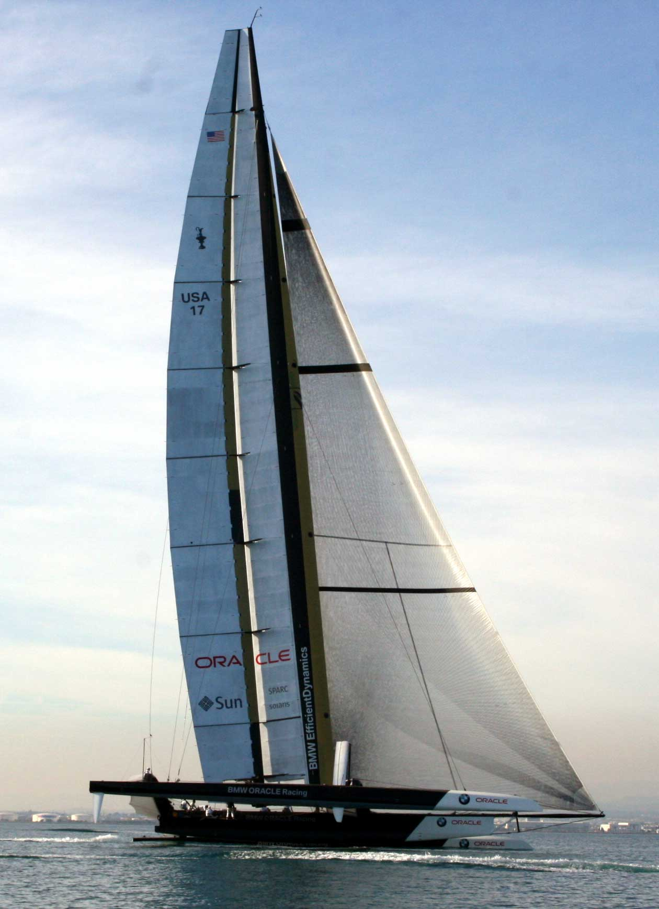
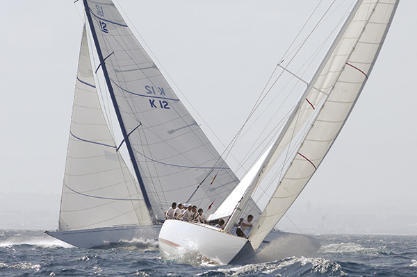
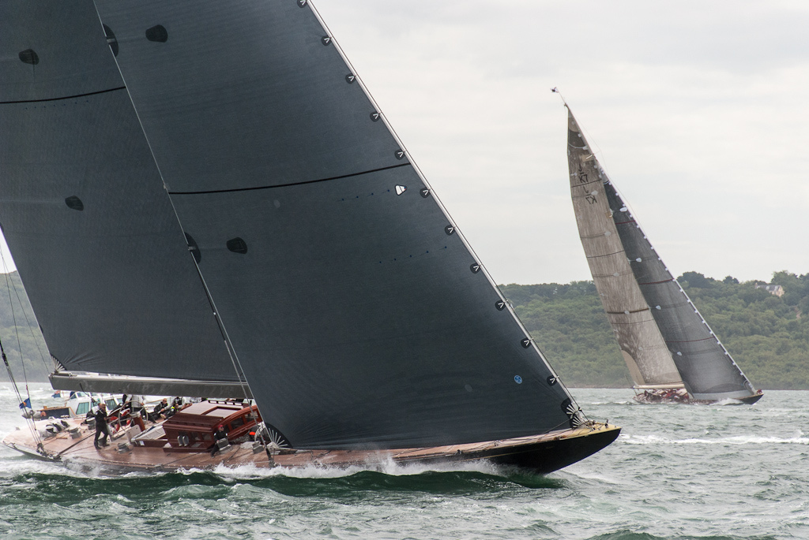
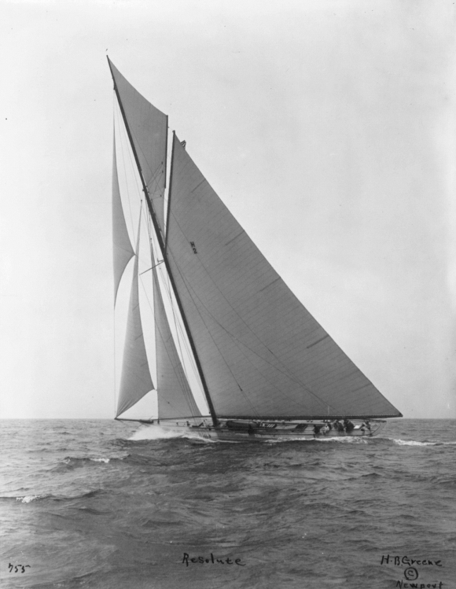
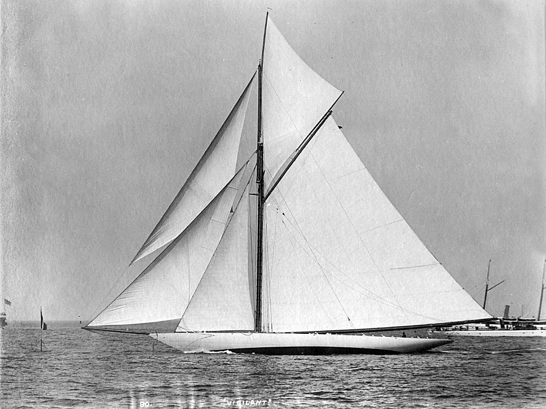

AC 75 |
2021 - tbd | An interesting class with lots of competition. Another foiling class however with the monohull there is much more space for change between boats. |
 |
AC 50 |
2017 | A fun class that continues the use of foiling and wing sails, very similar to the AC 72 class however the New Zealand team used Cyclist as their grinders which gave them a large step up instead of the arm grinder that the Americans were using. |
 |
AC 72 |
2013 | A new class with the introduction to foiling boats means a large boost in efficiency because of the lack of surface area in the water. There was also a continuation of wing sails however there were only two sails used with no extra reaching sail. |
 |
DOG Match |
2010 | The start of wing sails and maximizing efficiency. |
 |
IACC |
1992-2007 | The last monohull and true one design means that they are designed with the same formula creating a more even sailing event. |

|
IRYU 12mR |
1958-1987 | Starting to get more modern these are a major staple in the America Cup history and true one design and true one design |
 |
Universal J-class |
1930-1937 | The J-class is a beautiful racing yacht with a large crew. |
 |
Universal 75 ft |
1920 | These are boats made as a test for the j-class |
 |
SCYC 90ft |
1895-1903 | The longest boats of the American Cup these boats were owned by rich people and run by higher crew. |

|
SCYC 85ft |
1893 | Another large boat class created by the Seawanhaka Corinthian Yacht Club |
 |
NYYC 85 ft |
1885-1887 | This class was created by the New York Yacht Club for large 85 ft boats with large crews |

|
65 ft sloop |
1881 | Bigger boat with large crews |

|
Schooner Match |
1871-1876 | Racing schooners kind of one design |

|
Fleet racing |
1851-1870 | boat on boat with many boats, not one design |

|